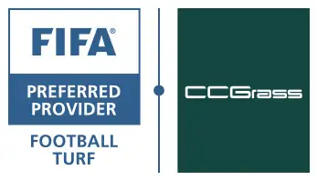
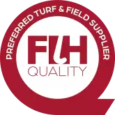

Transformación real
Antes / Después
Arrastra para comparar el mismo escenario.


15+ años · 100.000+ m² instalados
Desliza para ver cómo una cancha de tierra se convierte en una superficie de grado profesional.
“
El tiempo es el juez más honesto del trabajo bien hecho.
Un campo no se mide por cómo se ve el día que se entrega, sino por cómo está el día que ya nadie recuerda quién lo instaló.
Cada proyecto empieza por un diagnóstico honesto del uso real, el presupuesto viable y el resultado esperado.
Grama sintética, caucho, arena de sílice, cerramientos y bases que cumplen el estándar que la palabra calidad debería significar.
Cada cancha, patio o escenario se diseña e instala según su uso real — no según un catálogo genérico.
Desde la decisión hasta el mantenimiento, con la misma seriedad para quien llega dudando y para quien llega decidido.
El resultado se juzga años después de la inauguración — cuando ya nadie recuerda quién lo instaló.
Como distribuidor e instalador autorizado de CCGrass y Realturf en Colombia, trabajamos con grama sintética reconocida por las federaciones deportivas más exigentes del mundo.

CCGrass, el fabricante de la grama que instalamos, es Proveedor Preferido FIFA, con canchas certificadas bajo los estándares FIFA Quality y FIFA Quality Pro.

CCGrass es Proveedor Preferido de la Federación Internacional de Hockey (FIH), con superficies fabricadas bajo su exigente estándar de calidad.
Certificaciones otorgadas a CCGrass como fabricante del material. Total Campos es su distribuidor e instalador autorizado en Colombia.
Mayor fabricante de grama sintética del mundo, con presencia en más de 160 países. Licenciatario FIFA Quality Concept, certificado ISO 9001 e ISO 14001, y con sello Zero Waste & GRS (Global Recycled Standard) — producción responsable con más de 20% de material reciclado.
Más de 20 años de experiencia y más de 3,5 millones de m² comercializados. Licenciatario FIFA y superficie oficial de la Pro Padel League (PPL), homologada por la Federación Española de Pádel (FEP).
Arrastra para comparar el mismo escenario.
Certificada FIFA ★★, diseñada para hasta 13.800 horas de uso al año.
Higiénica, 100% lavable y verde durante todo el año.
Acabado 100% acrílico sobre asfalto o concreto, en los colores que el proyecto requiera.
Superficies amortiguadas y antideslizantes para escenarios indoor y multipropósito.
| Referencia | Uso | Fabricante | Sello |
|---|---|---|---|
| NatureD3 | Fútbol · Baseball · Rugby · Paisajismo | CCGrass | FIFA ★★ |
| UltraSport | Fútbol · Rugby | CCGrass | FIFA ★★ |
| YEII / YFII | Fútbol · Mini fútbol · Multi-sports | CCGrass | FIFA ★ |
| Stemgrass | Fútbol · Baseball · Rugby | CCGrass | FIFA |
| Liga Sport 850-50 / Extreme 50 | Fútbol deportivo | CCGrass | — |
| Pádel Pro Blue | Canchas de pádel | Realturf | PPL · FEP |
| Decorativa RT / Summer | Terrazas · jardines · zonas residenciales | Realturf | — |
| Trevi / Vita / Terrace / BasicPlus | Paisajismo, fibra corta a alta | Realturf | — |
Diagnóstico de uso, presupuesto y resultado esperado antes de recomendar cualquier material.
Escenarios deportivos, recreativos y decorativos diseñados para su uso real.
Grama sintética, caucho, arena de sílice, cerramientos y bases — grado profesional.
Porque el resultado se mide en cómo luce el campo años después, no el día de la entrega.
| Proyecto | Ubicación | Detalle técnico |
|---|---|---|
| Estadio Alberto Grisales | Rionegro, Antioquia | 8.200 m² · FIFA ★★ · NatureD3 63mm |
| Estadio Tulio Ospina | Bello, Antioquia | 8.097 m² · FIFA ★ · Stemturf 60mm |
| Estadio La Equidad | Guarne, Antioquia | 7.072 m² · Stemturf 63mm |
| Estadio de Quibdó | Quibdó, Chocó | 7.554 m² · Monofilamento |
| Unidad Andrés Escobar | Medellín | 4.800 m² · FIFA ★★ · Stemgrass 60E |
Medellín · Bello · Rionegro · Guarne · Guatapé · La Ceja · Girardota · Valledupar · Quibdó · Málaga · Pitalito · Aguachica · Villavicencio · Cúcuta · Pereira · Florencia · Montería · Retiro · Barbosa
Cuéntanos qué escenario tienes en mente y empecemos por entenderlo.
Solicitar asesoría